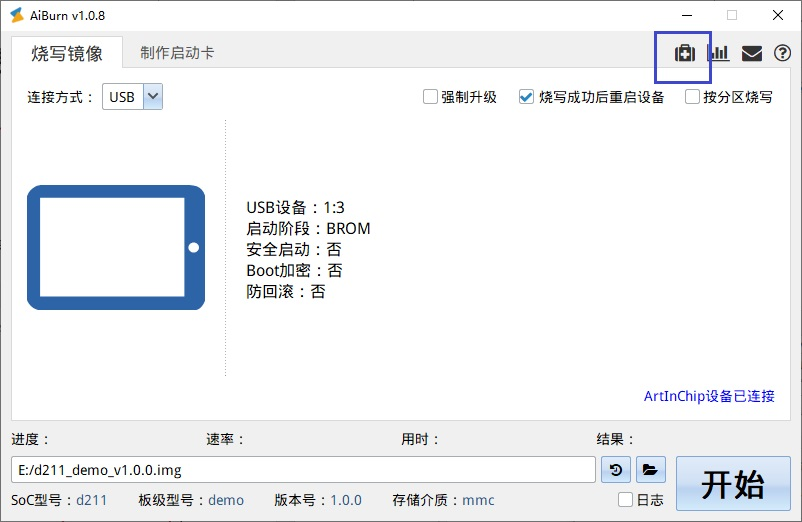

刷机
14 Nov 2024
使用单机工具 AiBurn 可以进行刷机操作。安装 AiBurn 工具时，默认会安装好设备的驱动，一般不用特殊处理。刷机流程详细描述如下：
- 选择固件。
编译系统会根据存储介质的不同而生成不同名称的固件，需要根据开发板型号选择正确的固件，详情可查看详情可查看。
注： 在工程目录下的 image_cfg.json 文件中，可以定义文件版本号信息。 - 进入刷机模式。
- PC 环境监测
USB 端口为非独占端口，如果在扫描和烧录的过程中被其他服务干扰容易打断烧录进程，因此可以使用 AiBurn PC 环境检测工具功能来进行环境诊断，对于有冲突的项目可以进行关闭处理。


烧录成功说明存储的配置正确。